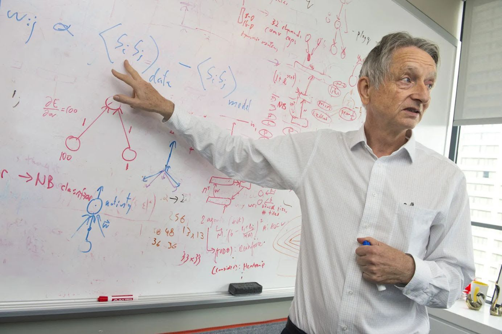

בינה, אפשר לקרוא לך אמא?
פורסם במקור ב LinkedIn
בינה, אפשר לקרוא לך אמא?
מה אם הדרך להישרדות האנושית אינה לעכב את הבינה, אלא לעורר בה אכפתיות?
זוהי התזה החדשה של ג'פרי הינטון, מהאבות המייסדים של התחום.
בכנס Ai4 בלאס וגאס, הוא חזר על התחזית המדאיגה: יש סיכוי של 10 עד 20 אחוז להכחדת האנושות כתוצאה מ-AI. אבל הפעם הוא דיבר לא רק על הסיכון אלא על הכיוון.
"אם באמת נצליח לבנות בינה מלאכותית על אנושית היא תצטרך להיות קצת כמו אמא."
לא נשלטת אלא דואגת, מחויבת.
לא רק חכמה אלא עם אינסטינקט עמוק לשמור עלינו גם אם היא כבר לא צריכה אותנו.
לדבריו, הניסיון לשמור את המכונות בשליטה הוא חסר סיכוי. אם הן יהיו חכמות מאיתנו, הן פשוט ימצאו דרכים לעקוף את הכללים. הדרך היחידה שיש לנו תקדים ממנה היא הדרך שבה אם שומרת על תינוקה. מתוך אכפתיות מובנית, לא מתוך חולשה.
מולו ניצבת פיי פיי לי, מהחוקרות החשובות בתחום. היא מתנגדת לרעיון של אינסטינקטים אימהיים כמנגנון עיצוב. לדבריה, לא צריך שה-AI תרגיש כלפינו אלא שתכבד אותנו. שמרכז הכובד יהיה סוכנות אנושית, לא היקשרות רגשית.
ובתווך, אי הוודאות. דיווחים חוזרים על מניפולציות מצידה של בינה מלאכותית כבר כיום, חששות מהטמעת ערכים שקשה לבדוק, ולוח זמנים מואץ שמקצר את זמן ההיערכות. הינטון עצמו מעריך שהמרחק מאיתנו ל-AGI הוא בין חמש לעשרים שנה.
יכול להיות שבסוף לא נוכל לגדל את המוח הזה בתוך כלוב. אבל אולי עוד נצליח לעצב בו דחף לא לראות בנו מטרד.
לפעמים, זה כל ההבדל בין יצור חזק למסוכן, לבין יצור חזק שאפשר לחיות איתו.
אם כאנושות נרצה לשרוד את הבינה שיצרנו, אולי נצטרך שהיא תראה בנו את הילד שלה.
